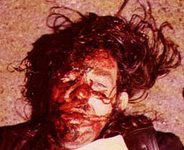
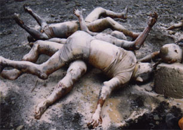

Caillou, épisode 374
Caillou tombe en bicycle mais il reste paraplégique, son père a le cancer

, la maison passe au feu et il y a une explosion nucléaire

au village.
Note: Cet épisode ne fut jamais diffusé.